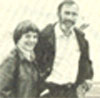

Paul Ehrlich (Bing Professor of Population Studies and Professor of Biological Sciences, Stanford University) and Anne Ehrlich (Senior Research Associate, Department of Biological Sciences, Stanford) are familiar names to ecologists and environmentalists everywhere. As well they should be. Because it was Paul and Anne who-through their extensive writing and research-gave special meaning to the words "population", "resources", and "environment" in the latter part of the 1960's. (They also coined the term coevolution, and did a lot to make ecology the household word it is today.) But while most folks are aware of the Ehrlichs' popular writing in the areas of ecology and overpopulation (most of us-for instance-have read Paul's book The Population Bomb) . . . far too few people have any idea of how deeply the Ehrlichs are involved in ecological research (research of the type that tends to be published only in technical journals and college textbooks). That's why it pleases us to be able to present-on a regular basis-the following semi-technical column by authors/ecologists/educators Anne and Paul Ehrlich.
If you're anything like us (or like most folks in the United States), the prospect of being among the one-out-of-every-four people who are-by the statistics-doomed to contract cancer is horrifying. Unfortunately, most folks feel helpless in the face of this threat. The tendency is to look upon cancer as almost an act of God . . . as something that's unavoidable.
From an individual's point of view, however, it would be more reasonable to compare the possibility of getting cancer to the odds of being killed in an automobile accident. In a society that's hooked on cars-as ours is-it's impossible to guarantee that any single person won't die in a crash. But the cautious, competent driver is, of course, much more likely to survive than is the fool who runs stop signs without looking. And the cautious, competent person also has a better chance of avoiding cancer than does the fool who smokes two packs of cigarettes a day and gorges on junk food.
Scientists have come to realize-in recent years-that the origins of most human cancers are environmental. The first connection between cancer and the environment was made by Sir Percival Pott in 1775 . . . when he discovered that chimney sweeps were very likely to get cancer of the scrotum.
The second tie-in between environmental factors and cancer came 100 years later, when the high incidence of skin cancer in dye plant workers was connected to the dyes themselves. (It turned out that the chemical compounds involved were similar to those in the soot that the chimney sweeps were constantly exposed to!) Since then, the list of environmental carcinogens (cancer-causing substances) has increased impressively.
As a result of these findings, it's now clear that a sensible "war on cancer" should-as its top priority-reduce people's exposure to substances known to be (or even just suspected to be) carcinogenic. This approach makes a lot more sense than a desperate-and, in the short term, possibly fruitless-search for cures.
On the cancer front, the closest analogy to driving blind drunk on a freeway is smoking cigarettes. If you want to be killed by cancer, that's probably the quickest and easiest way to increase your odds. Don't be fooled, either, by the cigarette companies' claim that "it's only correlations" that connect smoking to cancer.
After all, correlations show that you can be killed in an automobile accident. (You'll notice that there's a much higher frequency of dead bodies found in wrecked autos than in unwrecked ones.) And-to back up the massive statistical evidence-there's also much data from animal experiments to indicate that smokers will die young.
Thus, if you want to have a personal "cancer avoidance" strategy, a good place to start (if you smoke) is by stopping. It may also help a little if you avoid smokers. (We both quit 20 years ago and have few friends who smoke today.)
Also-should you have any degree of choice concerning where you live-you might be able to "miss" cancer if you stay away from smoggy metropolitan areas, live as far as possible from industrial sites, and avoid the vicinity of chemical plants like the plague. Contact with asbestos is also a big no-no ... although this substance is sometimes very difficult to avoid.
Your diet is another area where a little common sense can help improve your chances of avoiding cancer. There's some evidence that a diet which is low in animal fat and high in fiber will make a person less susceptible to bowel cancer. And-if you supplement that diet with vitamins A and C-there's a possibility that you may increase your resistance to the disease (although the effect of these vitamins is far from certain).
One of the most important steps you could take would be to reduce your in take of a variety of food additives. We always make certain we read very carefully the labels on food packages and- wherever possible-avoid those whose contents read like a shelf list from a chemistry laboratory.
Keep in mind, too, that the identification of carcinogens is a science in its infancy. We are just now discovering that-in many cases-chemicals that aren't carcinogenic may be changed by our bodies into cancer-causing agents ... or may interact with other substances to produce carcinogens. Prime examples are the nitrates/nitrites that are added to nearly all preserved meats-such as bacon, ham, hot dogs, and luncheon meats-as well as a variety of other foods. Once in the body, these substances can be transformed into highly carcinogenic nitrosamines.
In general, the fewer man-made chemicals we ingest, the better off we're likely to be. This is not to say, however, that natural substances can't cause cancer. As a matter of fact, aflatoxin-which sometimes contaminates nuts and is common in peanut butters-is one of the most potent carcinogens known. But human beings, like other organisms, have been exposed to such natural substances for millions of years . . . and, likely, have evolved mechanisms to reduce their cancer-causing potentials. The odds of our being able to resist the chemical compounds recently created in our laboratories are, of course, not so good.
Once again, don't be fooled by the claim that many food additives are perfectly safe-or that you don't have to worry about them-because enormous doses are required to give a rat cancer. For, although the mechanisms of carcin-ogenesis are not fully known, there's every reason to believe that there's no such thing as a "safe dose" of a carcinogenic chemical. This concept will be better understood when you consider one of the most widely accepted theories on the origin of this dread disease.
This theory suggests that each of our cells has a series of genes that control the reproduction of the cell and prevent the kind of runaway cell division that leads to the growth of tumors. It's thought that other genes control the ability of a given type of cell to divide when it contacts cells of "foreign" kinds of tissue. (The ability to metastasize-that is, to invade other tissues-is, of course, a characteristic of cancers... as opposed to nonmalignant tumors.)
Many things we come in contact with are mutagenic . . . that is, they can change or "mutate" genes. Radiation-as well as various chemicals-can do this. And, should one of the genes that prevents runaway multiplication of the cells be mutated, that gene may no longer be able to function as a safeguard. When this happens, the cell that contains the mutation can give rise to a whole line of cells . . . each of which lacks one of nature's safety devices. Another mutation in one of the descendants of the original cell may remove another of the safeguards and produce-in turn-another line of descendants in which two of the safety devices are absent. After four or five such steps, there may-finally-be a cell in which all the controls against rapid multiplication are removed . . . and the descendants of that cell will multiply out of control and give rise to a non-malignant tumor. A further mutation in one of these tumor cells might then produce a malignancy ... a cluster of cancerous cells capable of reproducing rapidly in environments other than that of the "home" tissue.
Such a model of carcinogensis is undoubtedly very much oversimplified. But it can explain some of the characteristics that have been observed in cancers. For instance, the long period of time between exposure to a cancer-causing agent and the appearance of the disease could be due to the fact that a series of further mutations must follow the initial change. If the series isn't complete, cancer doesn't occur (which, for example, would account for the observation that not all smokers develop cancer). This model also explains why agents that are known to cause mutations are also very often capable of causing cancers.
It should be obvious, then, that there is little reason for optimism about the harmlessness of low doses of known carcinogens. The chance that a molecule of the cancer-causing agent might be at the right place at the right time would, it is true, be closely related to how many molecules of the carcinogen were around. One would naturally expect that the possibility of an unwanted mutation would be high on exposure to high doses of a carcinogen and low at low doses . . . but never zero. Any exposure, therefore, would be potentially harmful.
Such is the rationale behind the so-called Delaney Amendment, which established a "zero tolerance" for known carcinogens in food. If this carcinogenesis model is correct, then-contrary to the claims of many food producers and manufacturers of food additives-there is no such thing as an entirely safe dose of any carcinogen.
The above model can also help us understand why animal tests for carcinogenesis are conducted in their present fashion. Ideally, it would seem that-to test for the cancer-causing potential of a substance such as saccharin-one would want to treat rats with doses equivalent to those that diet-drink users are normally exposed to. This technique would eliminate the "a person would have to drink 800 bottles a day" type of argument.
Unfortunately, such experiments are utterly impractical. Suppose, for example, a carcinogen would produce one cancer per 100 human beings exposed to the substance ... or more than two million cancers if all Americans were exposed. The chances of detecting that cancer-causing potential in an experimental group of 50 mice-which have the same degree of susceptibility and receive an equivalent dose of the carcinogen by weight-are essentially zero. Actually, in order to produce a reasonably certain demonstration of carcinogenicity, about 8,000 mice would have to be treated and then examined along with 8,000 untreated "control" mice. The costs in time and money to maintain-and later perform autopsies upon-16,000 mice is prohibitively high. And that's why screening for carcinogens usually involves a much smaller group of mice and the often-criticized large doses of the suspect chemical. The key assumption is that-if it causes cancer in high doses-it will cause it at low doses as well.
Now, what about the argument that a substance has been shown to be carcinogenic "only in rats and not in people"? This is one of the more preposterous criticisms of animal testing. (You will note that none of the Congressmen who made that claim in the case of saccharin volunteered to be guinea pigs in an experiment to test whether or not the substance could cause cancer in human beings!)
It's true, of course, that some substances that will cause cancer in one animal won't produce the disease in another . . . and that-accordingly-each substance that causes cancer in rats won't necessarily cause cancer in human beings. (Similarly, substances that appear to be safe in animals may cause cancer in people.)
There are two possible reasons for this: One is that the substance under test may be changed into a carcinogen by the metabolic machinery of one animal, while in the machinery of another animal it will not be so changed. Another possible reason is that the cells of different types of animals may not be identically susceptible to the action of different mutagens.
But, since human beings cannot be used as guinea pigs, the best that can be done is to test many animals and then make the conservative assumption that anything that can cause cancer in an animal can cause cancer in human beings. Indeed, to further simplify things, Professor Bruce Ames of the University of California has developed an easy and cheap bacterial system to test the mutagenic potential of substances. And the "Ames Test" is already becoming a first line of defense against environmental cancer.
It's always important to keep in mind that-even if a substance appears to be noncarcinogenic (or only a weak carcinogen) in animal tests-It may still be strongly carcinogenic to a human being. This leads to the bottom line in our philosophy of reducing the risks of getting cancer: Don't expose yourself to any radiation or synthetic chemical that you can readily avoid!
In other words, don't let your dentist take x-rays routinely every six months. Don't let him x-ray your child's head (especially before permanent teeth come in) without getting a detailed description of why the problem is serious enough to require this step. Don't use aerosol underarm deodorants or hair sprays. (If you can smell them when you apply them, this means-at a very minimum- you are drawing molecules of an odorant and a carrier into your lungs . . . the effects of which are probably unknown.) Avoid foods that contain nitrates/nitrites wherever possible ... as well as other chemical food additives. Wash fresh fruits and vegetables thoroughly to reduce your intake of carcinogenic pesticides. Try to reduce animal fats in your diet and increase your intake of fiber and vitamins . . . especially of A and C. Finally, shun smoking, smokers, smog, industrial areas, and asbestos.
Of course, even if a person does manage to do all these things, there is no guarantee that he or she won't develop cancer. . . but-by limiting his or her exposure to known and potential carcinogens-that person will be far less likely to be among the one-in-four who will, by the statistics, contract the disease.
For more details on environmental carcinogenesis, see Ecosclence: Population, Resources, Environment by Paul R. Ehrlich, Anne H. Ehrlich, and John P. Holdren ($19.95 postpaid from W.H. Freeman and Co., 660 Market Street, San Francisco, California 94104), especially pages 586-596 and the references cited. A briefer treatment may be found in John Cairns, "The Cancer Problem" (Scientific American, November, 1975). A good recent book on environmental health is Erik Eckholm's The Picture of Health (W.W. Norton, 1977).
|
STAFF PHOTO |
 |
|